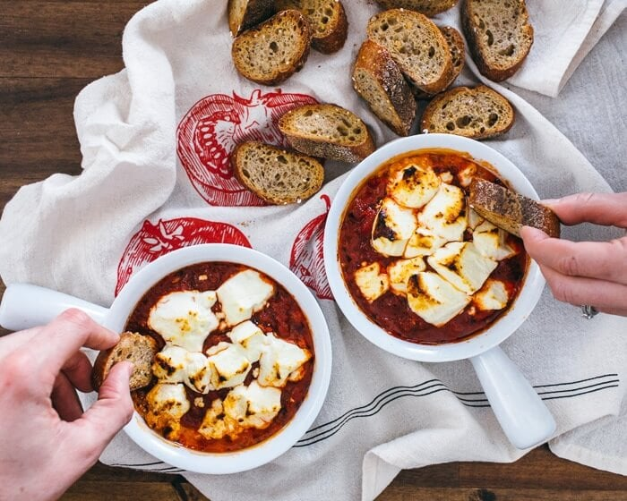

Ingredients:
- Fire roasted tomato sauce
- Goat cheese
- Chopped basil (optional)
Instructions:
- Cook up a quick fire roasted tomato sauce. This variety of canned tomato is key for the flavor.
- Add goat cheese and bake for 15 minutes at 375°F. Place goat cheese right into the sauce and bake it until it’s creamy and melty.
- If desired, broil the top for some char marks. If you’d like, you can broil the top of the baked goat cheese dip to get some golden char marks. Typically, we just eat it right away and don’t worry about broiling!
- Another nice addition would be a sprinkle of chopped basil over the top.